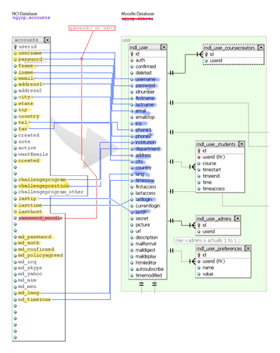

This plug-in was written to solve a problem of having two sets of usernames and passwords for website intanet and moodle.
Intranet is utilizing its own custom-written authentication system. Moodle is an open source e-learning platform.
Even though Moodle does provide its own solution to the problem, we found it counter-productive and unsatisfactory to our problem.
As a beta, this plug-in is activated at the time of user's login to intranet. At this time, script checks a user that is being logged in. If user's credentials are not found in Moodle users database, they are created. If credentials are present in Moodle's database, synching is activated to check password, first and last name, email and other account profile information for consistency.
This simple and effective way ensures that users will never have to worry about registering second time (for a Moodle account) or having to save/remember two sets of usernames/passwords.

One way syncing snapshot